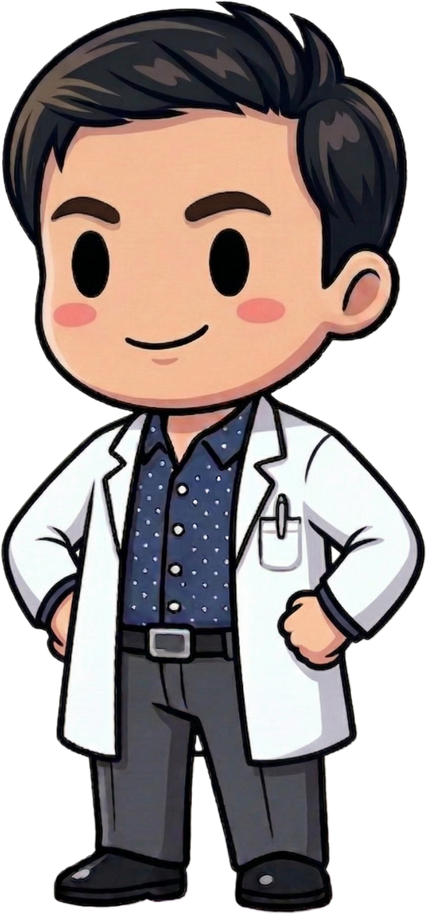
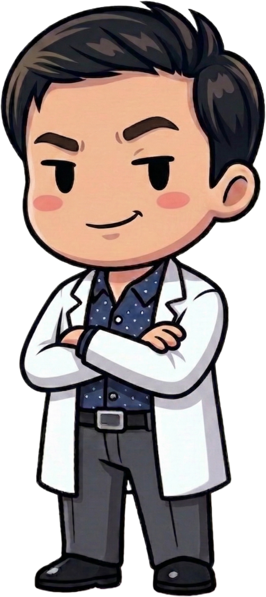

Respuesta integral para la salud Urológica masculina y femenina
¡Hola! Soy el Dr. Luis Gómez, Urólogo y creador de Dr. Doodle, a través del cuál busco acercar la Urología a todos de forma sencilla, entretenida y profesional.
Soy egresado de la especialidad de Urología dictada por la Universidad de Chile en el año 2020, y desde entonces me dedico a la atención de las patologías más comunes tanto de hombres como mujeres: Litiasis urinaria, Infecciones, Problemas prostáticos, Salud sexual y muchos más.
Mi objetivo es combinar la excelencia clínica con la educación, para que entiendas tu condición urológica de manera clara y sin complicaciones innecesarias.

Dr. Doodle - Tu compañero en urología
Elige la sucursal más cercana a ti
Accede directamente a mi calendario en Doctoralia y elige el horario que mejor se adapte a ti.

Si prefieres contactarme antes de agendar, usa el formulario de contacto más abajo.
¿Tienes dudas sobre una consulta o procedimiento? Escríbeme y estaré encantado de orientarte o agenda tu cita directamente.
Nota: Este canal es para orientación o citas. No se realizan diagnósticos médicos por WhatsApp.